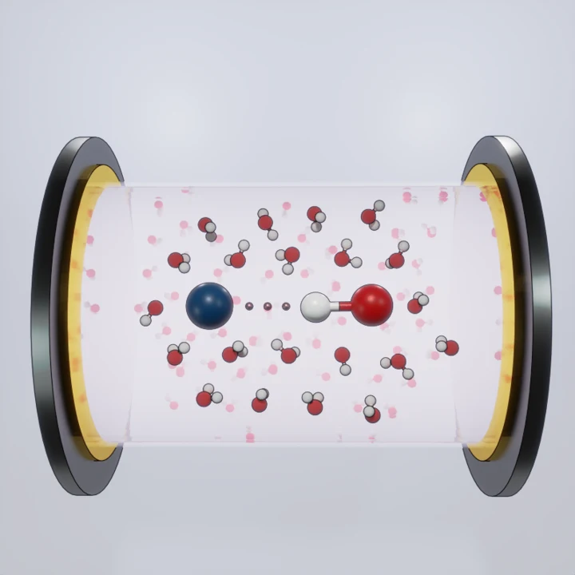
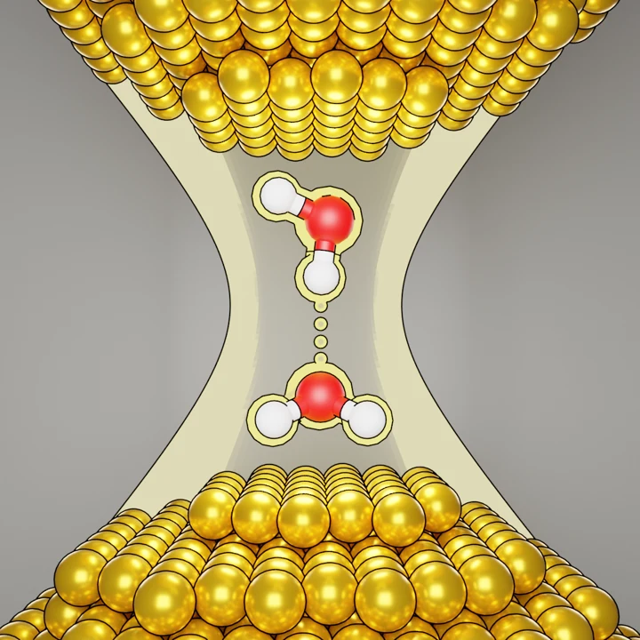
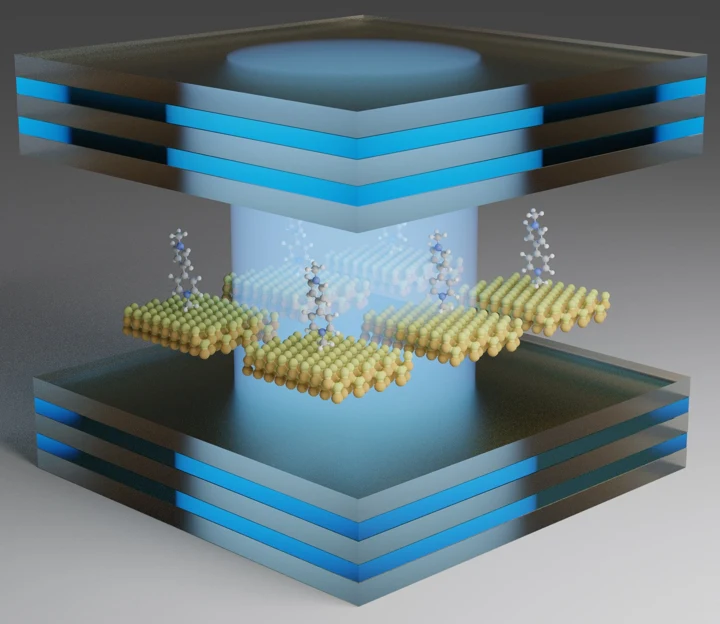

Chemical reactivity
Chemistry under strong coupling
Theoretical insights into resonant suppression in vibrational strong coupling.
View researchComputational chemistry · Quantum dynamics
I develop computational models and simulation workflows to explore molecular behavior, quantum dynamics, and chemical reactivity.
A closer look

Chemical reactivity
Theoretical insights into resonant suppression in vibrational strong coupling.
View research
Molecular cavity QED
Parametrized molecular cavity quantum electrodynamics for intermolecular interactions.
View research
Polariton chemistry
Exploring collective effects in polariton chemistry and photophysics.
View researchModels. Methods. Code.
My work brings together electronic structure, molecular dynamics, and quantum simulation. I build Python and C++ workflows for high-performance computing and collaborate with experimental researchers to interpret molecular behavior.
Explore my experienceThe working toolkit
Python · C++ · R · PyTorch · SQL
Gaussian · Q-Chem · VASP · GROMACS · LAMMPS · Qiskit · QuTiP
DFT · MD · QM/MM · Open quantum systems · Mixed quantum–classical dynamics
HPC · MPI · Slurm · Linux · Git
Simulation pipelines, high-throughput analysis, and reproducible workflows.
A tool for your next calculation
Move between energy units used in chemistry and explore the corresponding Boltzmann distribution.
Open the converter